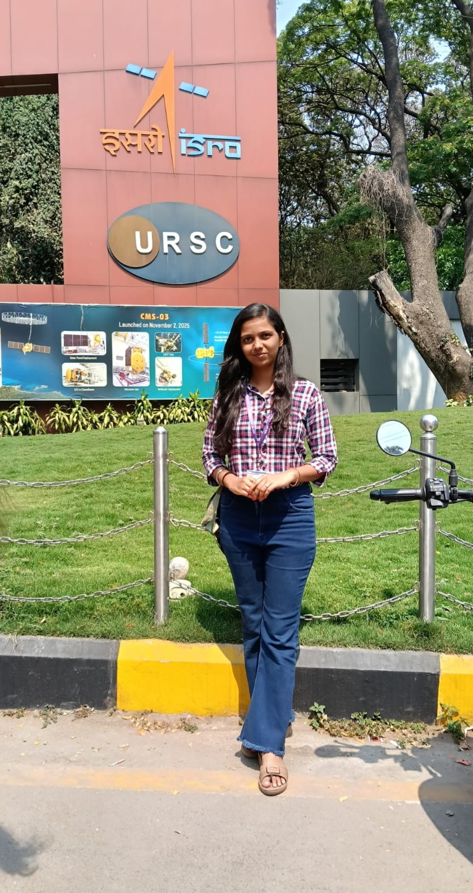
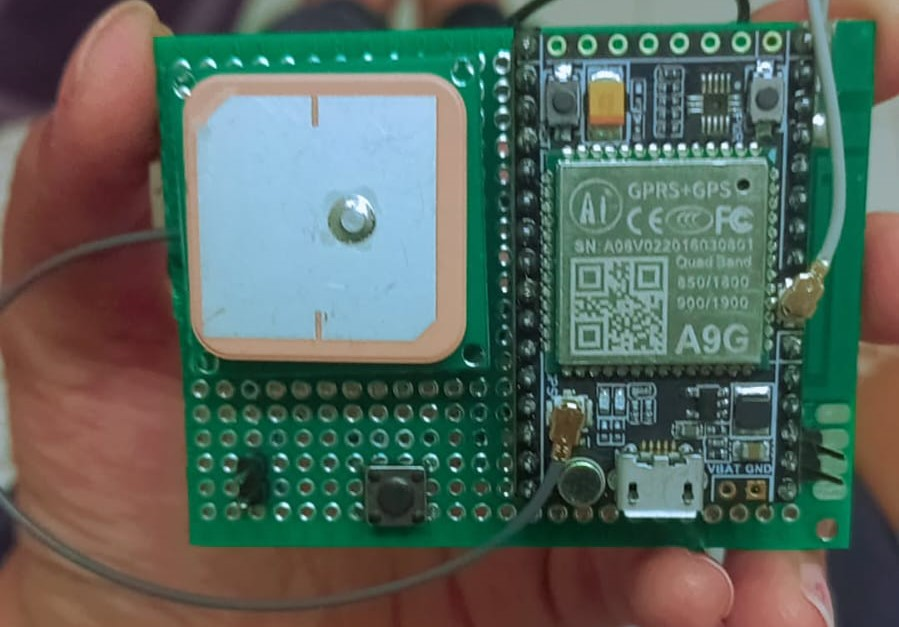
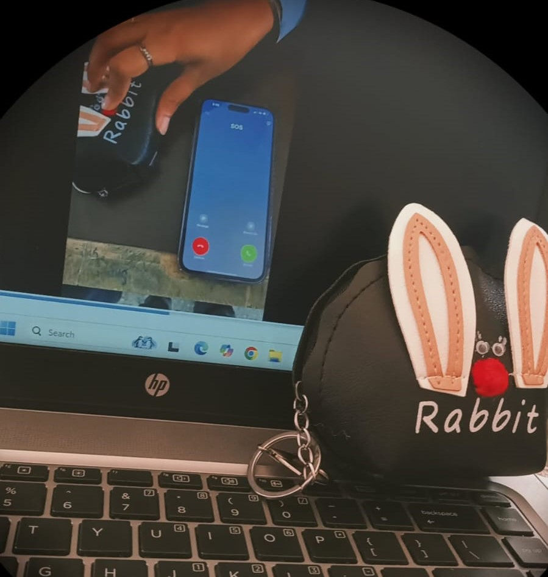

Passionate about building real-world applications, problem solving, and continuously learning new technologies.
View Projects
I am currently pursuing a Bachelor's degree in Computer Engineering at Rajarambapu Institute of Technology. I completed my Diploma in Electronics and Telecommunication Engineering from J.N.I.T Polytechnic, Pune.
I have a strong interest in software development, web technologies, and embedded systems. I enjoy working on real-world projects that enhance my practical knowledge.
My goal is to become a skilled software engineer by continuously learning and building innovative solutions.
Download ResumeRajarambapu Institute of Technology
Currently pursuing degree with focus on software development and core computer engineering subjects.
2025 – 2028B.V.J.N.O.I.T Polytechnic, Pune
Built strong foundation in electronics, circuits, and embedded systems.
Completed
Developed an emergency safety device that helps women in critical situations. It uses GPS (NEO-6M) for location tracking and GSM (SIM800L) to send alerts.
On pressing the SOS button, the device sends real-time location to emergency contacts, ensuring quick response and safety.
Technologies: ESP32, GPS, GSM, Embedded Systems

Designed and implemented hardware circuit integrating ESP32, GPS, and GSM modules. Focused on reliability and efficient communication between components.
Developed a web-based Placement Management System to manage student records, company details, and placement activities efficiently.
The system allows administrators to track student eligibility, manage recruitment processes, and generate reports using database technologies.
Technologies: Java, SQL